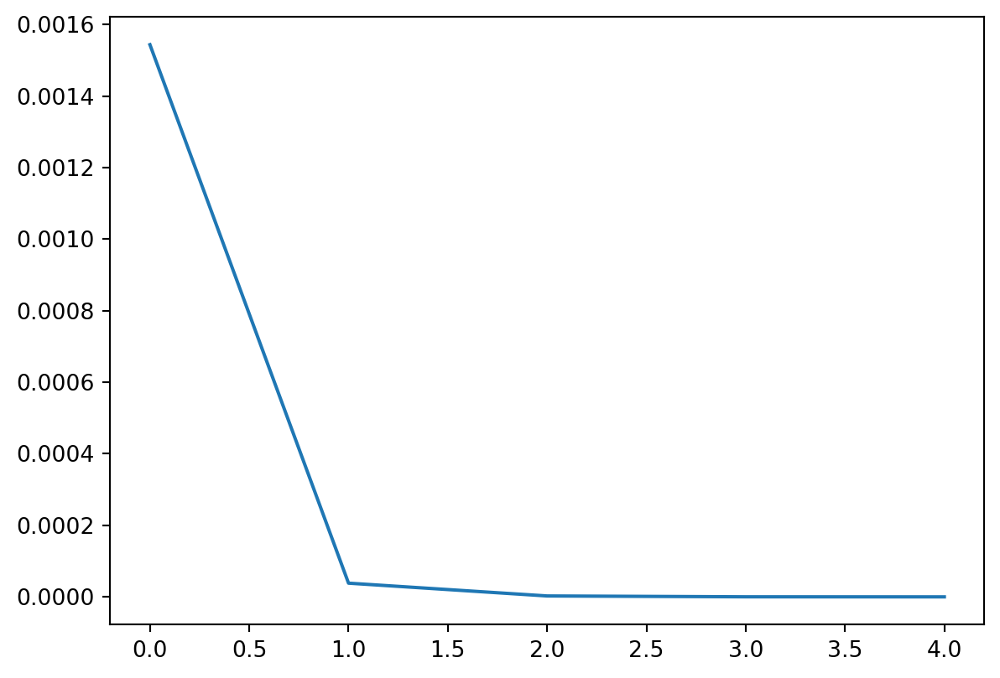

import numpy as np
# Data generation ----------------------------------------------
n = 1000
x = np.random.uniform(size=(n,))
W = 0.9
b = 0.1
y = W * x + bKeras
Vamos ajustar um modelo exatamente igual ao que fizemos nos exemplos 1 e 2 mas dessa vez usando o Keras.
Note
O Keras é uma biblioteca que faz parte do TensorFlow e possui uma sintaxe concisa para definir modelos de deep learning. O TensorFlow além de ser rápido e possuir implementações para GPU’s, possui uma feature chamada automatic differentiation que calcular as derivadas automaticamente.
Os dados estão sendo gerados da mesma forma que no exemplo 1.
Vamos importar o Keras.
from tensorflow import kerasAgora vamos definir o modelo no Keras usando a API funcional: Para definir modelos usando essa API fazemos:
Definimos o formato do nosso
inputusando a camadakeras.layers.Input. Nesse passo omitimos o número de observações. O(1,)nesse exemplo significa que o nosso input é uma matriz com1coluna.Definimos as transformações que vamos fazer no nosso input. Nesse caso usamos a camada
keras.layers.Denseque faz a transformação linearW*x+ b.Por fim definimos um modelo do Keras especificando um
inpute umoutput.
input = keras.layers.Input(shape=(1,))
output = keras.layers.Dense(units=1, use_bias=True)(input)
model = keras.Model(inputs=input, outputs=output)Esse modelo possui 2 parâmetros: w e b.
model.summary()Model: "model_3"_________________________________________________________________ Layer (type) Output Shape Param # ================================================================= input_4 (InputLayer) [(None, 1)] 0 dense_3 (Dense) (None, 1) 2 =================================================================Total params: 2Trainable params: 2Non-trainable params: 0_________________________________________________________________Em seguida compilamos o modelo falando qual é a função de perda que queremos minimizar e qual o método de otimização.
model.compile(
loss=keras.losses.mean_squared_error,
optimizer=keras.optimizers.SGD(learning_rate=0.01),
)Podemos então ajustar o modelo passando para o método fit os dados de input e output. Também especificamos um batch_size=1 (para ficar igual ao SGD teórico) e o número de epochs. Só estamos usando verbose=2 para a barra de prorgresso não aparecer neste site, você pode ignorar esse parâmetro.
history = model.fit(x=x, y=y, batch_size=1, epochs=5, verbose=2)Epoch 1/51000/1000 - 0s - loss: 0.0015 - 489ms/epoch - 489us/stepEpoch 2/51000/1000 - 0s - loss: 3.8309e-05 - 382ms/epoch - 382us/stepEpoch 3/51000/1000 - 0s - loss: 2.5557e-06 - 363ms/epoch - 363us/stepEpoch 4/51000/1000 - 0s - loss: 1.7280e-07 - 361ms/epoch - 361us/stepEpoch 5/51000/1000 - 0s - loss: 1.1419e-08 - 365ms/epoch - 365us/stepPodemos em seguida visualizar o valor da função de perda ao longo do número de épocas:
import seaborn as sns
sns.lineplot(x=range(5), y=history.history["loss"])<AxesSubplot:>
Visualização do grafo do modelo:
keras.utils.plot_model(model, show_shapes=True)You must install pydot (`pip install pydot`) and install graphviz (see instructions at https://graphviz.gitlab.io/download/) for plot_model/model_to_dot to work.Verificar que os pesos obtidos são o mesmo que usamos apra simular os dados:
model.get_weights()[array([[0.89984226]], dtype=float32), array([0.10008816], dtype=float32)]Fazer previsões com o modelo ajustado:
model.predict(x)[0:5]array([[0.8098919 ],
[0.66679585],
[0.49405667],
[0.81630385],
[0.78361654]], dtype=float32)